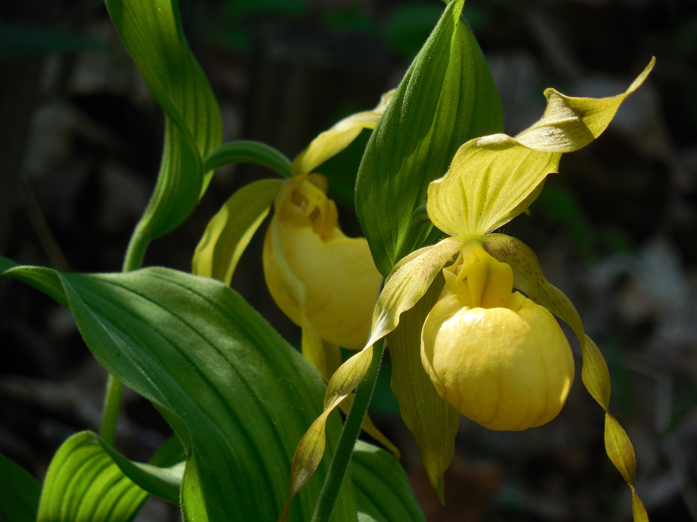

Skip to Content
Door County Wildflowers
Home
Spring
Summer
Fall
Contact
Yellow Lady's Slipper facts:
4-24 inches tall
Perennial
Native plant
Grows in wet, shaded deciduous woods, swamps, and bogs
An orchid
Official flower of Door County
